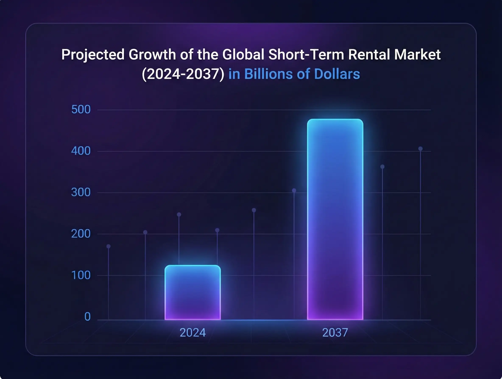
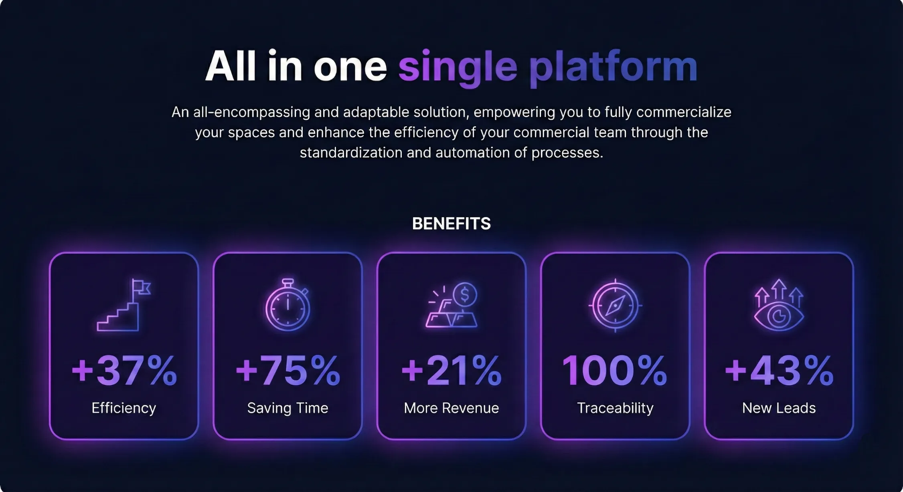

Digitalization has become a strategic pillar for the shopping mall industry.
Far from being just a technical upgrade, this transformation addresses operational challenges, enhances tenant experience, and ensures long-term business sustainability.
However, not all shopping malls are prepared for this transition. Implementing digital tools requires preparation, planning, and, most importantly, a strategic approach to ensure success.
Below is a detailed checklist to help you assess your mall’s readiness for digital transformation. Each point addresses critical aspects and provides a clear roadmap for an efficient and effective transformation.

1. Identifying Operational Challenges
The first step in any digitalization journey is an honest assessment of your current operations. While every shopping mall faces unique challenges, some common issues often indicate the need for transformation:
Inefficient manual processes: Does your team spend excessive time on repetitive tasks, such as contract management or payment tracking?
Poor tenant communication: Are tenants frustrated with unclear processes or slow response times?
Lack of real-time visibility: Is accessing critical information—like space availability or contract statuses—difficult?
If you recognize one or more of these challenges, digitalization can turn these weaknesses into strengths.
Automating tasks and adopting digital tools reduce errors and operational costs, allowing your team to focus on strategic initiatives. Additionally, guests increasingly expect fast, personal, and efficient digital communication, a trend that continues to amplify.
Each employee spends approximately 552 hours per year on non-essential and repetitive activities, such as data entry, form compilation, or filing documents. This amounts to 69 workdays, or more than three months, representing a quarter of the available time in a year to achieve business objectives.
Source: Forbes
2. Centralized and Organized Data Management
Data management is a fundamental pillar of digital transformation. Without a solid and well-structured information foundation, any attempt to implement digital tools will likely fail.
Centralized access: Are your data stored in a unified system accessible to key team members?
Data accuracy and completeness: Can you rely on your records being up-to-date and comprehensive?
Analytics capabilities: Do you have tools that provide real-time insights into key metrics for informed decision-making?
If your data is disorganized or scattered, the first step is to establish a centralized management system.
A well-structured data system not only facilitates technology implementation but also delivers critical insights to drive strategic decisions.
3. Preparing Your Team for Change
The success of any digital transformation depends largely on the people driving it. Having the right tools is not enough; you need a motivated and adaptable team.
Willingness to learn: Is your team open to training on new technologies?
Internal leadership: Do you have champions within your organization who can act as change agents?
Culture of innovation: Does your team value efficiency and embrace new ways of working?
If your team is prepared and motivated, you have a strong foundation for success.
Providing adequate training and effectively communicating the benefits of change ensure that everyone understands how new tools will make their work easier and more efficient.
4. Synchronization of Marketing and Leasing
Integrating marketing and leasing functions is one of the biggest benefits digitalization offers. These departments, historically siloed, can achieve remarkable results by sharing data and strategies.
Attracting tenants: Is your marketing team designing campaigns to target specific tenants?
Information flow: Do marketing and leasing share data to optimize processes and improve outcomes?
Lead tracking: Do you have systems in place to ensure opportunities generated by marketing convert into signed leases?
If you see opportunities to improve this connection, digitalization can bridge the gap and create effective synergy.
This alignment not only increases efficiency but also enhances the tenant experience by streamlining the journey from the first inquiry to contract signing.
Why is system integration important in short-term leasing? I’ll answer that here
5. Budget and Strategic Vision
Digitalization is a long-term investment, requiring an initial financial commitment. However, the benefits—such as operational efficiency, revenue growth, and tenant satisfaction—far outweigh the initial costs.
Resource allocation: Is your organization willing to allocate resources for developing and implementing digital solutions?
Clear ROI expectations: Do you have a clear idea of the benefits you expect, such as time saved, revenue generated, and cost reductions?
Strategic alignment: Is digitalization aligned with your business’s long-term goals?
If you have a budget and clear objectives, you’re in a strong position to take the next step.
Treat digitalization as a strategic investment rather than an added expense to ensure organizational alignment and commitment.
6. Selecting a Reliable Provider
The right technology partner can make the difference between successful digitalization and a problematic implementation. Choosing the right platform should focus on the provider’s ability to address your mall’s specific needs.
What should you look for in a solution?
Process automation: Tools that reduce time and errors associated with manual tasks.
Integration with existing platforms: Compatibility with systems like Salesforce, PowerBI, MRI and Adobe Sign.
Customization: Solutions tailored to your business’s unique characteristics.
Support and scalability: A provider that offers assistance during implementation and grows with your evolving needs.
If you’ve identified a trusted provider, like CRENEX Malls, you’re ready to begin the journey.
CRENEX Malls: Your Partner in Digital Transformation
With an all-in-one platform designed specifically for shopping malls, CRENEX Malls has helped businesses like yours achieve:
A 37% increase in operational efficiency.
A 75% reduction in time spent on manual tasks.
A 21% revenue growth by optimizing processes.
100% traceability across all operations.
A 43% increase in new lead generation.

Request a demo and discover how CRENEX can revolutionize your shopping mall management.